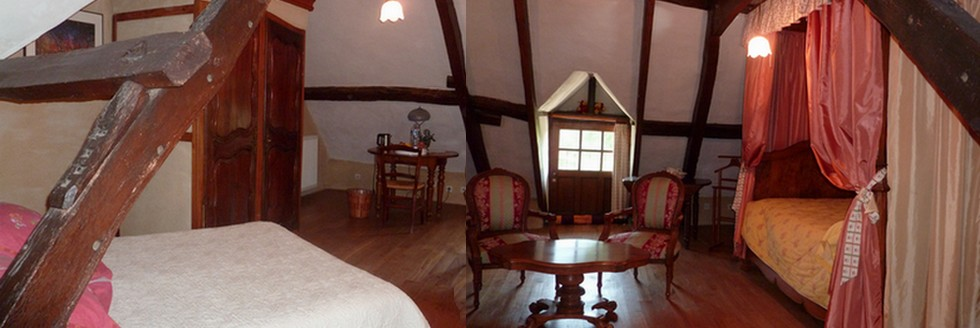

The family room
The great asset of our house is its 60 m² family room, which sleeps up to six people, with original sleeping arrangements: a four-poster bed and an alcove.
Les Fougerêts — southern Brittany
Our guesthouse is located in southern Brittany, in the Oust valley, in the countryside, 50 km from Vannes. A one-hectare park with animals and a play area will delight children.
A protected landscape
We are set within a 19 km protected natural area, the great natural site of the Oust valley, in inland southern Brittany. The Oust river winds between steep granite cliffs, marshes, woods and forests before joining the Nantes–Brest canal.
The beauty of this landscape supports a wide range of tourist activities around villages full of character such as La Gacilly, Rochefort en Terre, Malestroit, and the Brocéliande forest — the heart of Arthurian legend — around Paimpont. No overview would be complete without mentioning the Redon area. Redon is a small town surrounded by marshland with a marina that gives it a particular charm, made possible by the Vilaine river, which lets boats reach the sea via the Arzal dam.
We are 50 minutes from Rennes, an hour from Nantes, and Vannes and the Gulf of Morbihan are only 50 minutes away. The nearest place to see the sea is Damgan, where locals from Les Fougerêts often head during the highest tides.
The nearest port for crossing the Channel is Saint-Malo, about an hour and a half's drive away. Rennes airport has flights from London Gatwick, Southend, Southampton, Manchester and other cities, and the high-speed TGV serves Redon station.
The hunting lodge is 4 km from La Gacilly, well known for its art and craft workshops, the Yves Rocher cosmetics brand, and its outdoor photography exhibition.

The property
Mariannig and I renovated our home over more than 20 years, respecting Brittany's architectural heritage and trying to give it back its former charm. We used only noble materials: oak, lime render, terracotta, and schist stone.
Accommodation
We have two rooms, decorated and furnished with care in the purest Breton tradition, each with its own private bathroom and toilet.

The great asset of our house is its 60 m² family room, which sleeps up to six people, with original sleeping arrangements: a four-poster bed and an alcove.

The other room has its own appeal too: a 20 m² double room with a 160 cm queen size bed.
Free wifi is available throughout the house. In each room, as well as a display stand in the entrance hall, you will find a folder with all the local tourist activities.
The grounds
A landscaped one-hectare park, outdoor games and animals delight children in complete safety. We have 6 goats, chickens, ducks and a few ornamental poultry, and a pond with goldfish and carp…
A fully-equipped 35 m² veranda. This room serves as a sitting room where you can read or watch television in complete peace.
A hearty breakfast, made mainly of our own home-made produce (apple juice, jams, crêpes), will be served along with a small local speciality we'll let you discover when you visit.
Association
An association called Peuples en Images ("Peoples in Pictures") was born from my passion for documentary film-making over more than 30 years. Click the play button to watch.
Watch our Youtube channelRates
We speak English, Spanish and Romanian.